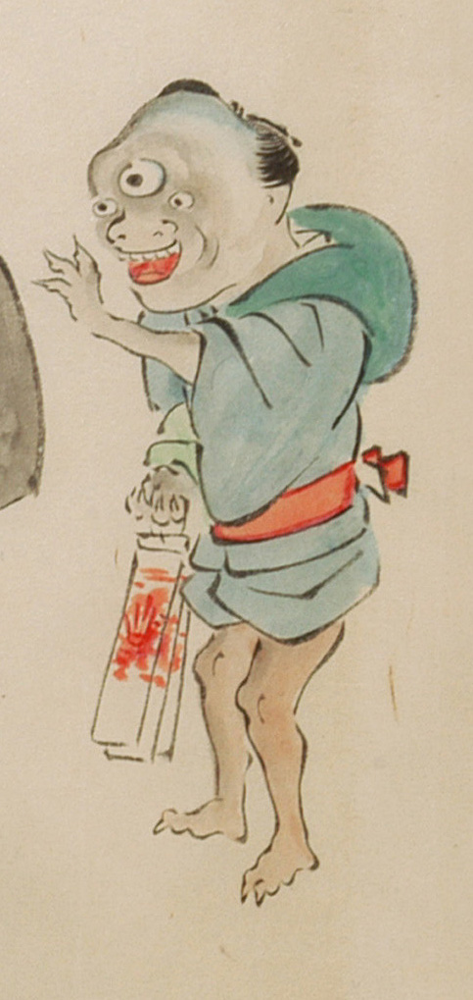

三つ目の化物。青色の着物を腰に絡げ、赤色の帯を締めて、風呂敷包みを肩に背負っている。額の中央に大きな3つめの目があり、鼻は横に広がり、上顎に牙が並んでいる。手足は3本指で鋭い爪が生えている。白地に赤い模様が描かれた縦長の袋を右手に持っている。
出典：親書誌：U426_nichibunken_0053：化物婚礼絵巻；バケモノコンレイエマキ／日付：2006／資源識別子：U426_nichibunken_0053_0023_0001
Copyright (c)2010- International Research Center for Japanese Studies, Kyoto, Japan. All rights reserved.